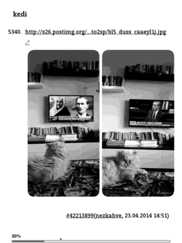
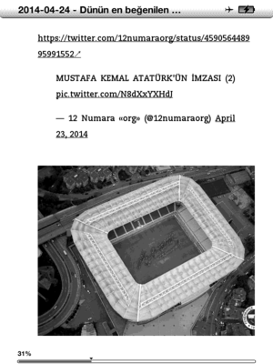
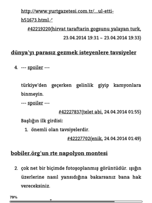
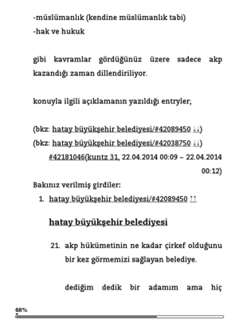

e-okuyucular için güncel sözlük içeriği edinme
Kindle için dünün en beğenilen entry'leri (debe)

Günün debe dosyasını her gün düzenli olarak erken bir saatte kindle'ınıza alabilirsiniz. Bu hizmete abone olmak için aşağıdaki formu doldurun.
- Bu hizmetin amacı ekşi sözlük kullanıcılarının beğenileriyle şekillenen, gündeme ve hayata alternatif bakış sunan debe girdilerinin okunabilirliğini artırmaktır.
- Hizmetin sürekliliği için bu hizmete altyapı sağlayan sunucunun maliyetinin karşılanmasına katkı sağlayabilirsiniz. Bunun için sağ üstteki bağlantıyı kullanarak bağış yapabilirsiniz.
- Bir kindle cihazına sahip olmadan bilgisayarınıza ya da akıllı telefonunuza kindle uygulamasını yükleyerek de bu hizmetten faydalanabilirsiniz.
- Bu hizmetin kapsamı dışında cihazınıza dosya gönderilmez.
- 17 temmuz 2013'ten itibaren gün gün mobi biçiminde derlenen debe dosyaları arşivine şurdan ulaşabilirsiniz.
Önemli not (30.11.2015): Bu hizmet şimdilik askıya alındı. Gelişmelerden haberdar olmak için e-posta adresinizi aşağıdaki formu doldurarak bildirebilirsiniz.
Özellikler ve ekran çıktıları
- doğrudan bağlantısı verilmiş resimlerin gömülmesi
- bağlantısı verilmiş tivitlerin gömülmesi
- güncel başlıklarda ilk girdinin eklenmesi
- bakınız verilmiş girdilerin eklenmesi
- başlıkların içindekiler olarak listelenmesi
- fiziksel ya da dokunmatik tuşlar ile girdiler arası hızlı geçiş yapabilme
|  |  |
|  |  |
{kind=link}
{kind=link}
{kind=link}
{kind=link}